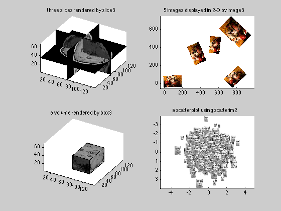

figure;
subplot(2,2,1);
load mri;
T = [1 0 0 0;0 1 0 0;0 0 2.5 0];
h1 = slice3(squeeze(D),T,1,64);
h2 = slice3(squeeze(D),T,2,64);
h3 = slice3(squeeze(D),T,3,14);
set([h1,h2,h3],'EdgeColor','black','LineStyle','-');
colormap gray(88);
view(30,30); axis equal; axis vis3d;
light;
title('three slices rendered by slice3');
a = axis;
subplot(2,2,2);
load clown;
C = reshape(map(X,:),[200,320,3]);
for k = 1:5
alpha = rand*360;
cx = rand*800; cy = rand*600; cz = 0;
R = [+cos(alpha/180*pi) -sin(alpha/180*pi);
+sin(alpha/180*pi) +cos(alpha/180*pi);
0 0]*(0.5+rand)/1.5;
t = [cx;cy;cz] - R * [size(C,1)/2+0.5; size(C,2)/2+0.5];
h = image3(C,[R t]); axis equal
end
title('5 images displayed in 2-D by image3');
subplot(2,2,3);
load mri; D=squeeze(D);
be = [54,96,34,96,1,14];
h = box3(D,[1 0 0 0;0 1 0 0;0 0 2.5 0],be);
set(h,'EdgeColor','black','LineStyle','-');
colormap gray(88);
view(30,30); axis equal; axis vis3d;
axis(a);
light;
title('a volume rendered by box3');
subplot(2,2,4);
try
load frey_rawface;
catch
error('download frey_rawface from http://www.cs.toronto.edu/~roweis/data.html');
return
end
facelibrary = {};
for k = 1:length(ff)
f = reshape(ff(:,k),[20 28]);
facelibrary{k} = f;
end
N = 1000;
h = scatterim2(randn(N,1),randn(N,1),facelibrary,rand(N,1)*1+0.01);
set(h,'CDataMapping','scaled');
colormap gray
axis ij; axis equal;
title('a scatterplot using scatterim2');
